rayleigh_sonic
Rayleigh line relations between local and sonic conditions.
Back to Compressible Flow Toolbox Contents
Contents
Syntax
T_Tstar = rayleigh_sonic(M,'T/T*') P_Pstar = rayleigh_sonic(M,'P/P*') rho_rhostar = rayleigh_sonic(M,'rho/rho*') U_Ustar = rayleigh_sonic(M,'U/U*') a_astar = rayleigh_sonic(M,'a/a*') h_hstar = rayleigh_sonic(M,'h/h*') Tt_Ttstar = rayleigh_sonic(M,'Tt/Tt*') Pt_Ptstar = rayleigh_sonic(M,'Pt/Pt*') rhot_rhotstar = rayleigh_sonic(M,'rhot/rhot*') at_atstar = rayleigh_sonic(M,'at/at*') ht_htstar = rayleigh_sonic(M,'ht/ht*') ds_cp = rayleigh_sonic(M,'(s-s*)/cp') __ = rayleigh_sonic(__,gamma)
Input/Output Parameters
| Symbol | Variable | Description | Format | |
| Input | M | local Mach number | 1D double array |
|
| - | spec | specifies output quantity (see options below) | 1×1 char |
|
| gamma | (OPTIONAL) specific heat ratio, defaults to 1.4 | 1×1 double |
||
| Output | Q_out | output quantity (specified by spec) | 1D double array |
Options for spec:
- 'T/T*' = local-to-sonic static temperature ratio (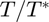)
- 'P/P*' = local-to-sonic static pressure ratio (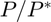)
- 'rho/rho*' = local-to-sonic density ratio (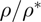)
- 'U/U*' = local-to-sonic velocity ratio (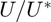)
- 'a/a*' = local-to-sonic speed of sound ratio (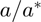)
- 'h/h*' = local-to-sonic static enthalpy ratio (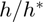)
- 'Tt/Tt*' = local-to-sonic stagnation temperature ratio (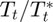)
- 'Pt/Pt*' = local-to-sonic stagnation pressure ratio (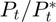)
- 'rhot/rhot*' = local-to-sonic stagnation density ratio (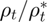)
- 'at/at*' = local-to-sonic stagnation speed of sound ratio (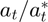)
- 'ht/ht*' = local-to-sonic stagnation enthalpy ratio (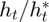)
- '(s-s*)/cp' = sonic-to-local nondimensional entropy change (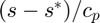)
Examples
All local-to-sonic ratios in a Rayleigh flow with a local Mach number of 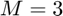 in air (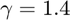).
Set 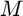.
M = 3;
Local-to-sonic static temperature ratio ().
T_Tstar = rayleigh_sonic(M,'T/T*')
T_Tstar = 0.280276816608997
Local-to-sonic static pressure ratio ().
P_Pstar = rayleigh_sonic(M,'P/P*')
P_Pstar = 0.176470588235294
Local-to-sonic static density ratio ().
rho_rhostar = rayleigh_sonic(M,'rho/rho*')
rho_rhostar = 0.629629629629630
Local-to-sonic velocity ratio ().
U_Ustar = rayleigh_sonic(M,'U/U*')
U_Ustar = 1.588235294117647
Local-to-sonic speed of sound ratio ().
a_astar = rayleigh_sonic(M,'a/a*')
a_astar = 0.529411764705882
Local-to-sonic static enthalpy ratio ().
h_hstar = rayleigh_sonic(M,'h/h*')
h_hstar = 0.280276816608997
Local-to-sonic stagnation temperature ratio ().
Tt_Ttstar = rayleigh_sonic(M,'Tt/Tt*')
Tt_Ttstar = 0.653979238754325
Local-to-sonic stagnation pressure ratio ().
Pt_Ptstar = rayleigh_sonic(M,'Pt/Pt*')
Pt_Ptstar = 3.424451989912536
Local-to-sonic stagnation density ratio ().
rhot_rhotstar = rayleigh_sonic(M,'rhot/rhot*')
rhot_rhotstar = 5.236331349654618
Local-to-sonic stagnation speed of sound ratio ().
at_atstar = rayleigh_sonic(M,'at/at*')
at_atstar = 0.808689828521619
Local-to-sonic stagnation enthalpy ratio ().
ht_htstar = rayleigh_sonic(M,'ht/ht*')
ht_htstar = 0.653979238754325
sonic-to-local nondimensional entropy change ().
ds_cp = rayleigh_sonic(M,'(s-s*)/cp')
ds_cp = -0.776377231900535